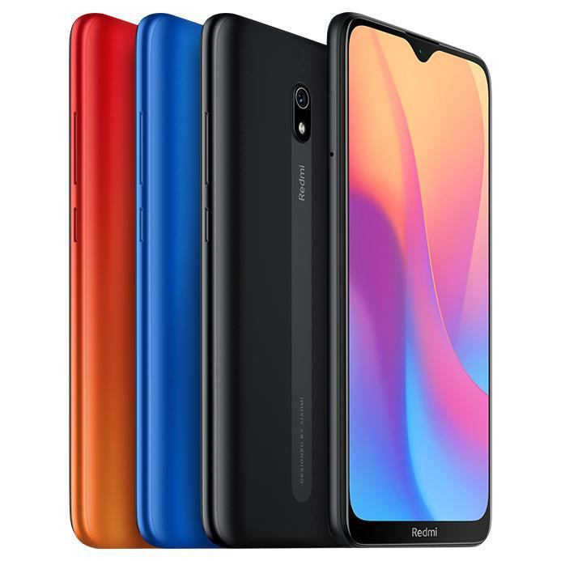

Telefoni
Kas ir telefoni?
Darbības princips
Mobilais telefons darbojas pēc bāzes stacija-klients principa. Mobilo sakaru operators noteiktā teritorijā uzstāda vairākas bāzes stacijas, pie kurām pieslēdzas klientu mobilie telefoni. Klientam pārvietojoties, mobilais telefons automātiski pārslēdzas starp bāzes stacijām. Komunikācijas starp bāzes staciju (torni) un telefonu var būt analogas vai digitālas. Visi mūsdienu mobilo telefonu standarti lieto ciparu sakarus.
Bāzes stacijas
Tās ir vairāk vai mazāk vienmērīgi izkliedētas tīkla pārklājuma teritorijā.
Tās sastāv no raidītājiem, uztvērējiem, antenām un relatīvi neliela datora. Antenas parasti novieto augstu virs zemes. Lauku teritorijās tām būvē speciālus torņus (ja nav pieejami jau agrāk uzbūvēti torņi), pilsētās antenas novieto uz augstu māju jumtiem.
Bāzes stacijas ir savienotas ar centrāli. Daudzos standartos caur centrāli iet pat sarunas vienas šūnas robežās. Bāzes stacijām parasti ir 3 antenas, kas šūnu sadala trijos 120° sektoros. Šādā veidā izveidojas trīs šūnas, kas ļauj palielināt tīkla ietilpību.
Savienojumi starp bāzes stacijām un centrāli
Sākotnējā variantā tie bija tādi paši, kādus lietoja, lai savienotu savā starpā parasto telefonu centrāles (T1 vai E1, atkarībā no kontinenta).
Šie savienojumi ir vai nu ar vadiem, vai arī point-to-point radiolinki. Radiolinki ir diezgan populāri, tāpēc, ka nav nepieciešams vilkt vadus pašiem, vai īrēt vadus no fiksēto telesakaru operatora.
Tomēr palielinoties nepieciešamībai pēc lieliem datu pārraides ātrumiem,un līdz ar to apjomiem, mobilie operatori cenšas bāzes stacijas savienot ar optisko kabeļu līnijām, tādējādi palielinot to caurlaides spēju.